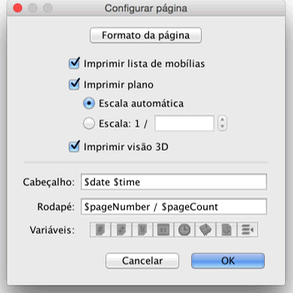
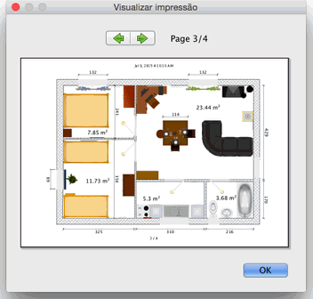

| Imprimindo uma casa | |||
Para imprimir uma casa, escolha Arquivo > Imprimir.... Normalmente, Sweet Home 3D imprime a lista de mobílias, o plano e a visão 3D atual de uma casa 3D, usando
o tamanho do papel, margens e orientação normal.  Na janela de configuração da página, você pode modificar o tamanho do papel ou orientação clicando no botão Formatar página. Você pode também escolher se a lista de mobílias, o plano e a visão 3D devem ser impressas ou não. Para visualizar a configuração de sua página, escolha Arquivo > Visualizar impressão....  Na janela de visualização de impressão, você pode ver como a casa será impressa, página a página. Para modificar a página visualizada, clique nas setas na parte superior da tela ou pressione as setas do teclado. |
|